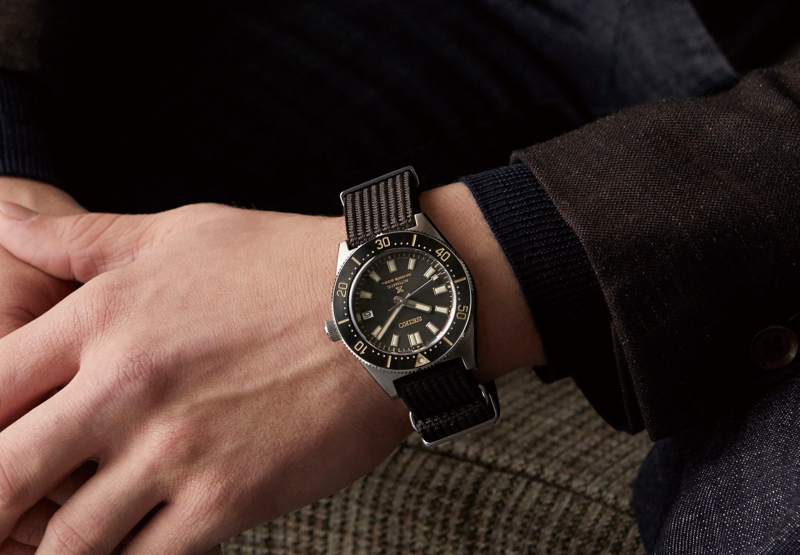
Seiko
To understand the importance of time, you would - quite ironically - have to stand still for a moment.
Just think about it: would you be able to start your job on time or know when the New York Stock Exchange opens if it were not for timekeeping?
History tought us that timekeeping is intricately involved with the increased complexity of society, and the above example shows it yet again:
time has become fundamental to the way in which we organise society.
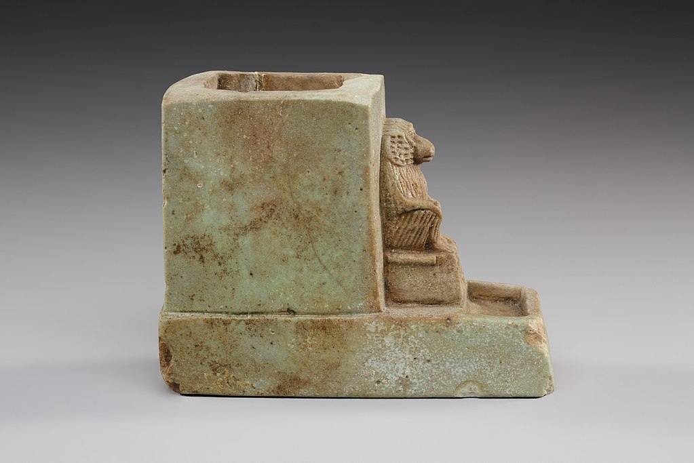
Ancient Egyptian Water Clock
Before we dive into modern watches, we should first learn that timekeeping became more important as societies grew more complex.
An example of timekeeping in history is this Ancient Egyptian water clock; the container of water slowly depletes from a tiny hole.
By looking at the amount of water one could estimate the time that had passed since the box was filled.
That timekeeping coincides with complexity is reiterated by the presence of a baboon on this clock.
The baboon stands for Thoth: the god of wisdom.
That is to say, even in Egypt, people kept time to organize relatively complex processes.
A watch on a 'nato strap'
Having backdropped modern watchmaking with a longer tradition of timekeeping let us continue with the scope that I set for this article: iconic modern watchbrands. This tiny, digital museum of watches showcases some of the most presitigious and best known watch brands of the present day.
To start off, here is a list of some notable watch brands. We shall dive deeper into some brands that are not on this list, but are certainly worth a mention. With this list and the timepieces that will follow in this gallery, you should have a nice introductory grasp of the watchmaking world.
- Cartier
- Piaget
- Panerai
- Hublot
- Ulysse Nardin
- Chopard
- Bremont
- Girard Perregaux
- Breitling
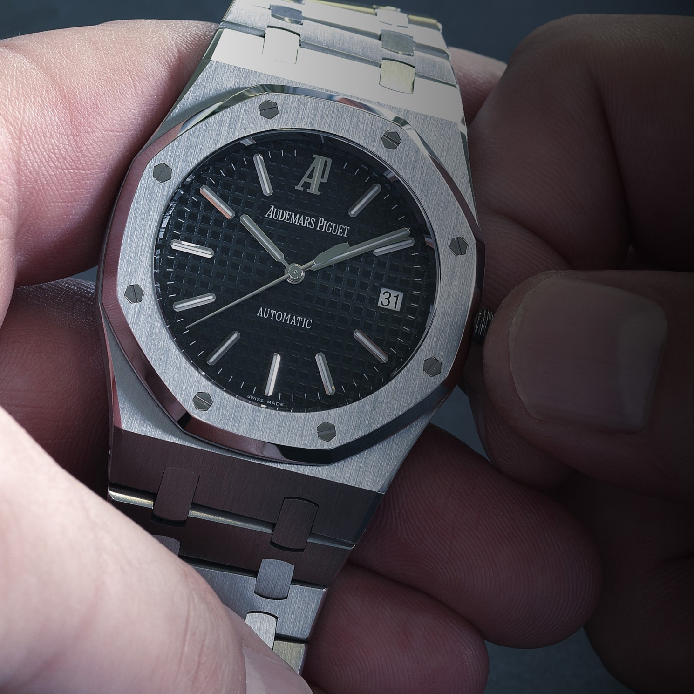
Audemars Piguet
Audemars Piguet is best known for its 'royal oak' model. In this example, the dark dial contrasts strongly with the light colours on the rest of the watch. This set-up is one of the most iconic interpretations of the royal oak.
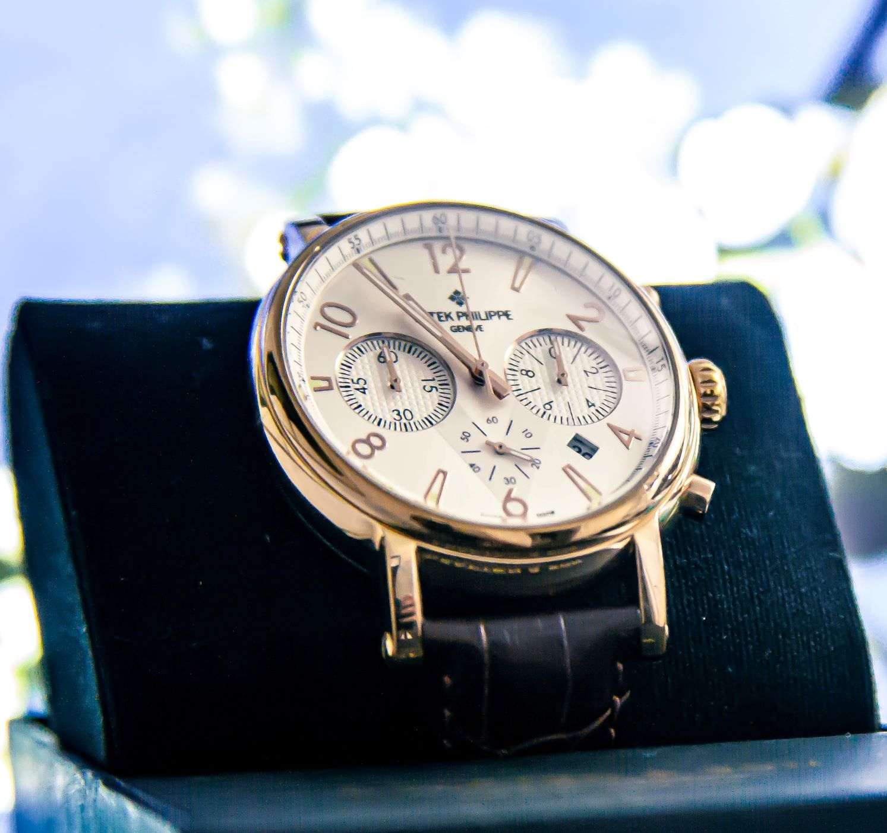
Patek Philippe
Patek Philippe is best known for its dress watches: watches that are best suited for formal occasions. Patek Philippe is among the highest-end watch brands. It is not without reason that the most expensive watch sold at an auction is a Patek Philippe.
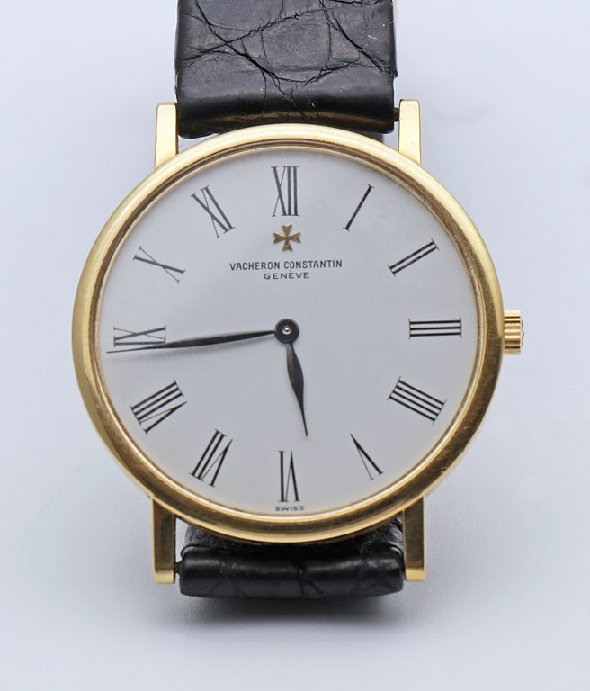
Vacheron Constantin
The watchbrands from the past three slides form 'the holy trinity of watches': Audemars Piguet, Patek Philippe and Vacheron Constantin. These three brands are seen as the most traditional swiss watchbrands. They have consistently produced high-quality timepieces for more than a century.
This trinity has such a rich legacy that it is held in great esteem by collectors and watch fanatics. Some mistakenly believe rolex partakes in this holy trinity of watches.
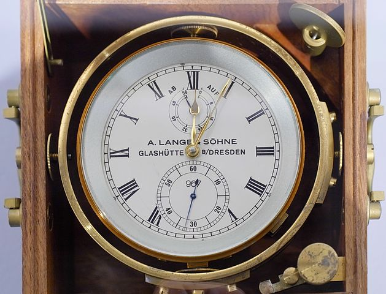
A Lange & Söhne
This German company seized its watch production from 1945 (end of WWII) until 1990 (end of Cold War), because its factory resided in Soviet-occupied Germany. Today it is alive and kicking and has regained its reputation for excellent watchmaking. They are especially well known for their complex movements and complications (functions besides plain timekeeping).
Watch fanatics may find it interesting to see the word 'Glashütte' on this watch because there is a modern watch company with that exact same brandname. This watch is made 3 years before the company 'Glashütte' started. But, A Lange & Söhne and Glashütte both come from Glashütte, which lies in the very East of current-day Germany.
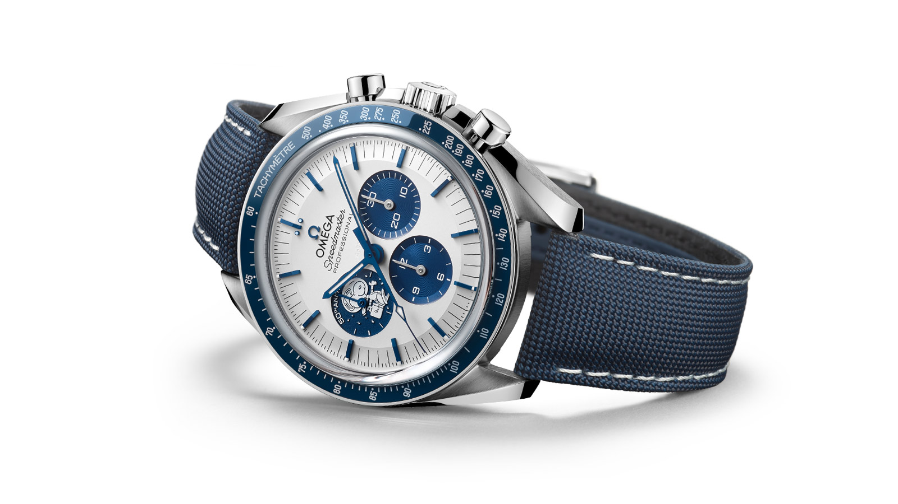
Omega
Omega was founded in 1848 and is now part of the powerful 'Swiss Swatch Group', a large holding that includes other prestigious brands such as Blancpain, Ck Calvin Klein watches and jewelry and Tissot.
Omega watches are known for many different things. One exciting connotation is its inclusion in many James Bond films since 1995.
Another connotation that I cannot leave out is Omega's involvement in space exploration. Omega speedmasters were worn on many different moon missions. When Jeff Bezos took a short trip to space he wore a speedmaster for the ocasions.
In 1970, astronauts' Omega watches played a critical role in their survival. When there was a fault in the descent propulsion system, the Astronauts aboard Apollo 13 timed the burn so that it would last exactly 14 seconds (the significant time needed to descend to earth at safe speeds and in a stable manner).
Because of this pivotal role in Apollo 13's succes, Omega was awarded the Silver Snoopy Award: a reward with which NASA honours outstanding employees and partners. The watch that you see above depicts the character 'snoopy' for this reason and celebrates the 50th anniversary of the Apollo 13 mission. Apart from that, this is my favorite Omega watch: I love the blue colors, the backstory, the playful snoopy character and clear presentation of the dial.
A recurring critique of Omega is that they produce too many limited editions. Some collectors find that it devalues the speciality of limited editions: they become too easily available. The next watch brand has upheld a juxtaposed policy in recent years..
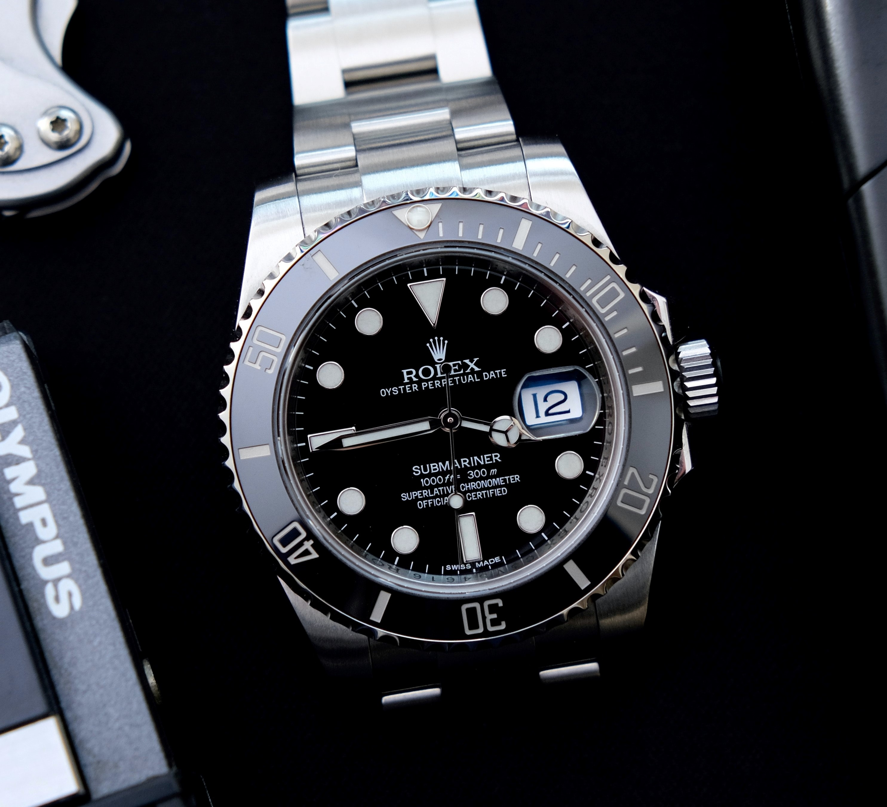
Rolex
Rolex requires little introduction: it probably is the watchbrand with most worldwide popularity. Since the Covid-19-induced pandemic, Rolex watches have become so desirable that boutiques are sold out of almost all of their inventory.
Many rolex watches sell almost two times above their recommended retail price. Meanwhile, the Hans Willdorf foundation (owner of Rolex) has limited production of the watches due to Covid-19 and in order to artificially increase demand (a popular technique used by high-end fashion brands)
There was a time that rolex watches were not desirable at all. As vintage watch collector Marco from The Timepiece gentleman explained, some pawn shops had posters explaining customers to 'leave their rolex datejusts at home'. Those watches would likely be worth quite the fortune today.
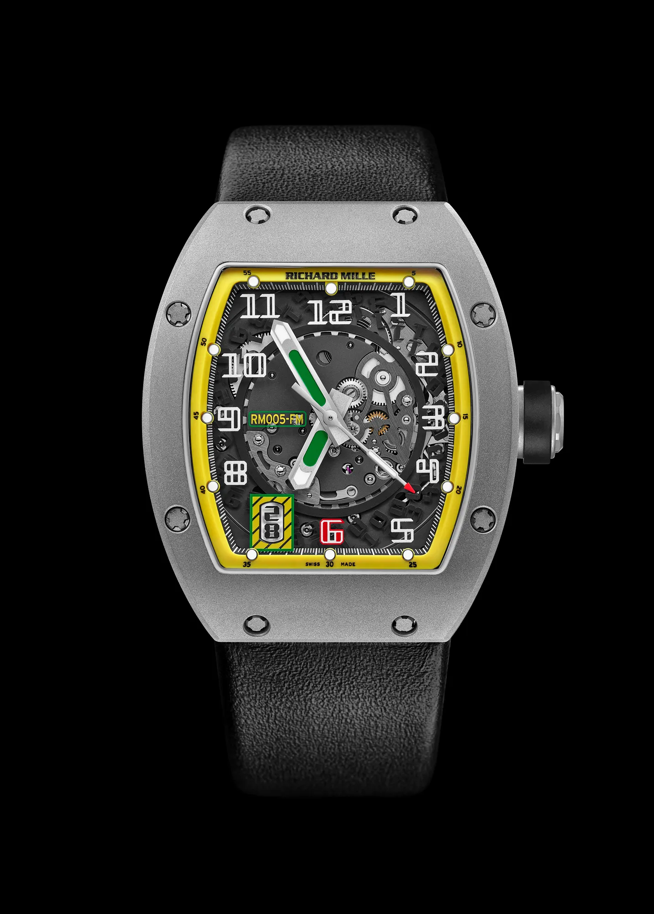
Richard Mille
There are other watches that shot up in value quite recently. Watches by the brand Richard Mille have shot up in price in quite the staggering way over the past handful of years.
A recurring topic about these watches is their apparent cheapness: many Richard Mille watches come on plastic straps and way surprisingly little. People still crave these watches for their exclusivity, the rarity of particular models and the fact that the brand is very popular with celebrities.
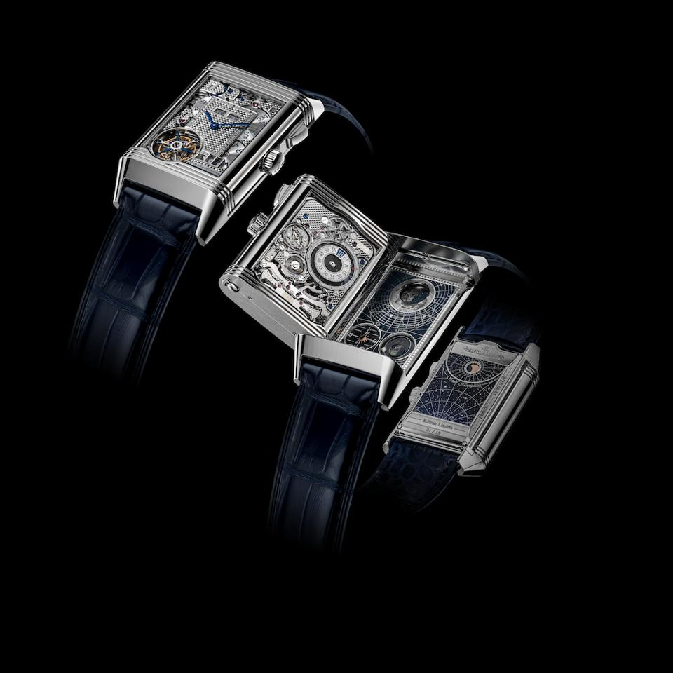
Jaeger LeCoultre
Jaeger le Coultre is a watch brand that has held quite close to tradition. It is respected for that by some watch purists. The most iconic Jaeger le Coultre watch is the one you see depicted on the image above: the 'Reverso'.
Reverso can be very interesting and complex watches. But at the same time, the fact that the movement has to direct its energy to two different watch faces makes this watch an incredibly complicated one to make. That is exactly why I enjoy inspecting every detail of the watch depicted above. You could Jaeger LeCoultre explain the complexity of this watch if you wish.
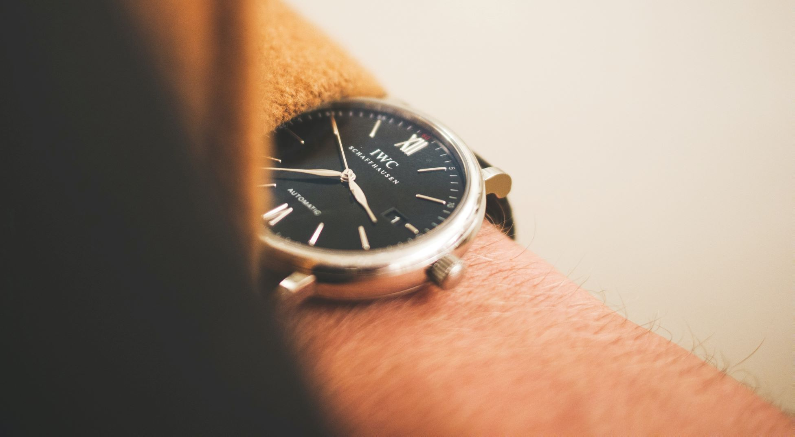
IWC Schaffhausen
IWC was founded in 1868 in Switzerland. They have quite a distinct style of design. Most watch collectors know the brand for its aviation watches: watches that are designed for use by pilots. Another name for such a watch is a 'Propilot'.
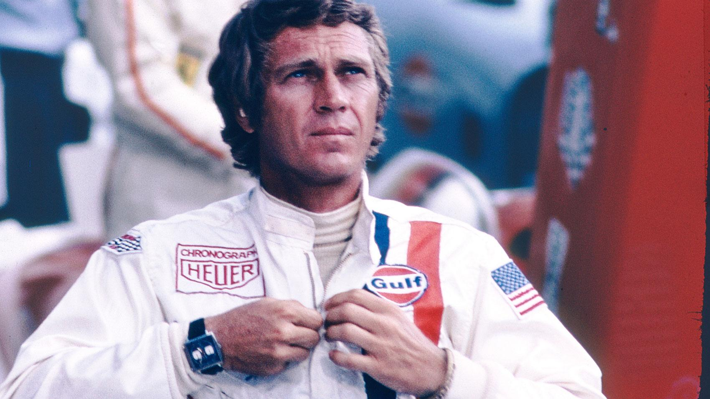
Tag Heuer
Tag Heuer is well known for its connotation to the racing car industry, and formula 1 in particular. In the film Le Mans from 1971, the protagonist Michael Delany wears a Tag Heuer watch. Ever since then up until today, Tag Heuer remained quite a loyal sponsor of Formula 1 racing events.
Another popular movie appearance of Tag Heuer is in the recent movie 'Wolf of Wall Street'. Because of Leonardo DiCaprio's partnership with Tag Heuer the filmmakers could not use a rolex for the scene in which DiCaprio threw a rolex at his crowd of employees. That's why they used a Tag Heuer that looks very much like a rolex.